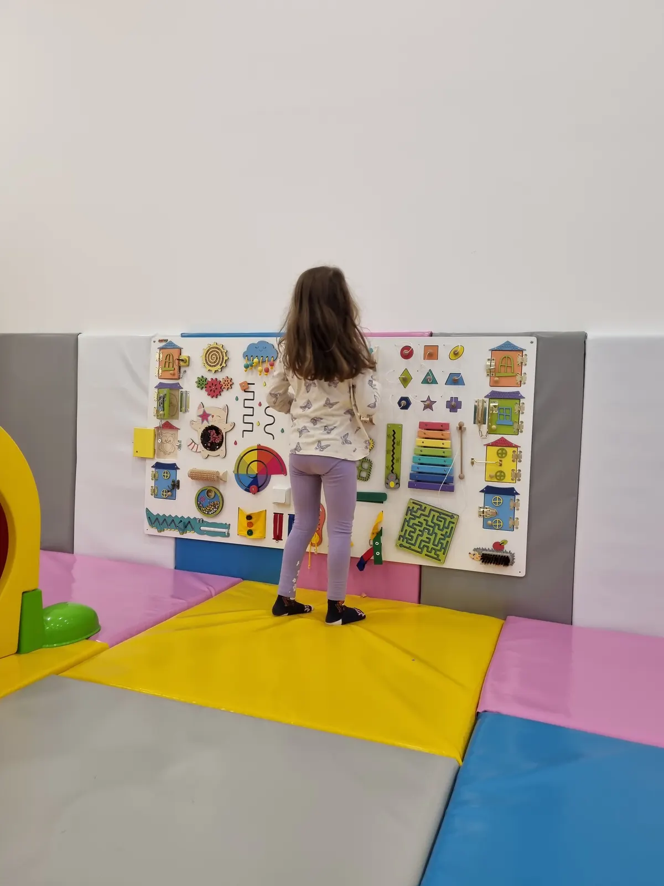

01
Pozovite i najavite dolazak
Pozovite 069 300 6875, recite kada dolazite i proverite sve što vas zanima.
Početna › Čuvaonica
Čuvanje dece po satu · TC Roda
Ostavite dete kod nas dok završite kupovinu, posao ili obaveze u gradu. Dete se igra u igraonici od preko 300 m², a naše osoblje je uz njega sve vreme.

Kako funkcioniše
01
Pozovite 069 300 6875, recite kada dolazite i proverite sve što vas zanima.
02
Drugi sprat TC Roda, Save Kovačevića 48a. Parking je besplatan, a naše osoblje preuzima dete.
03
Obavite šta treba i vratite se po dete. Plaćate po satu provedenom u čuvaonici.

Zašto roditelji biraju nas
Cena čuvaonice
Čuvanje se plaća po satu. Ako ostajete sa detetom u kafiću, važi cena igraonice, 450 din / sat.
Za uzrast dece i ostale detalje najlakše je da nas pozovete.
500 din / sat
Česta pitanja
Čuvanje dece u čuvaonici Milutin i Milica košta 500 dinara po satu.
Pozovite 069 300 6875 i najavite dolazak, dovedite dete na drugi sprat TC Roda i pokupite ga kada završite obaveze.
Da. Čuvaonica radi svakog dana, uključujući subotu i nedelju, od 09:00 do 21:00.
Igra se u igraonici od preko 300 m², uz naše osoblje: avantura staza, tobogani, bazen sa lopticama, sportski i bebi kutak.
U TC Roda, na drugom spratu, Save Kovačevića 48a, Kragujevac. Parking je besplatan.